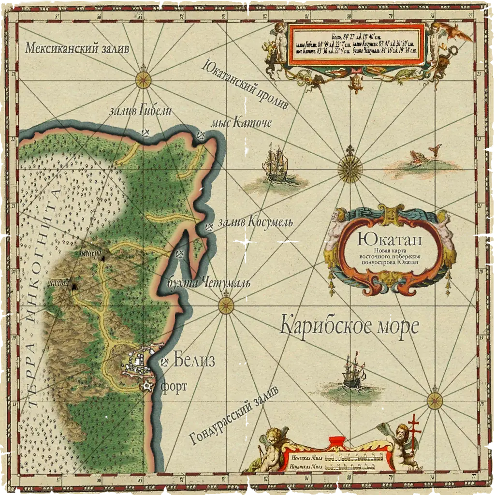
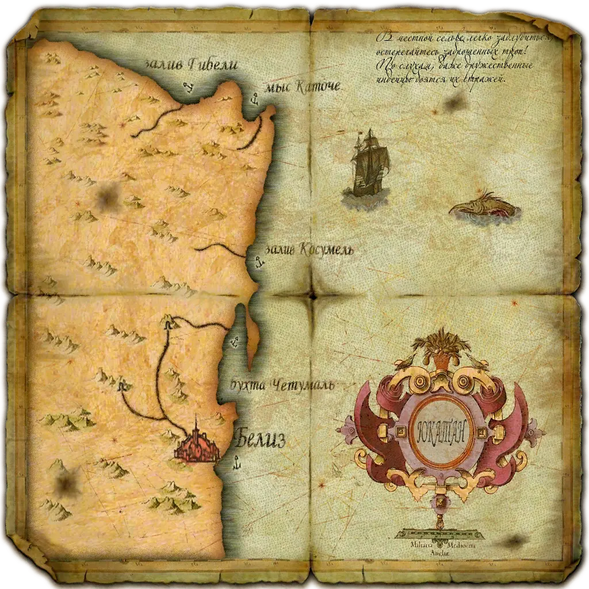
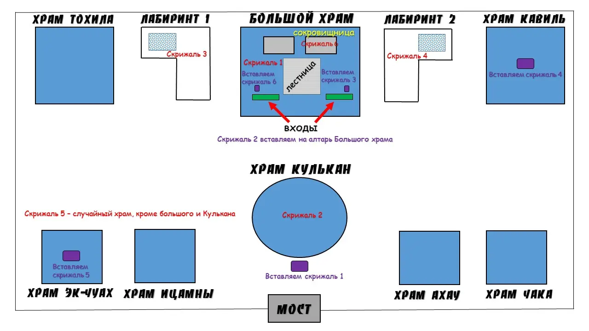
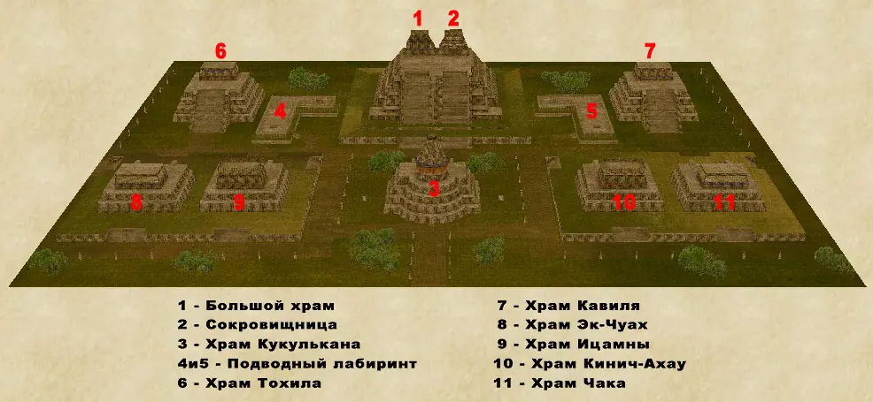
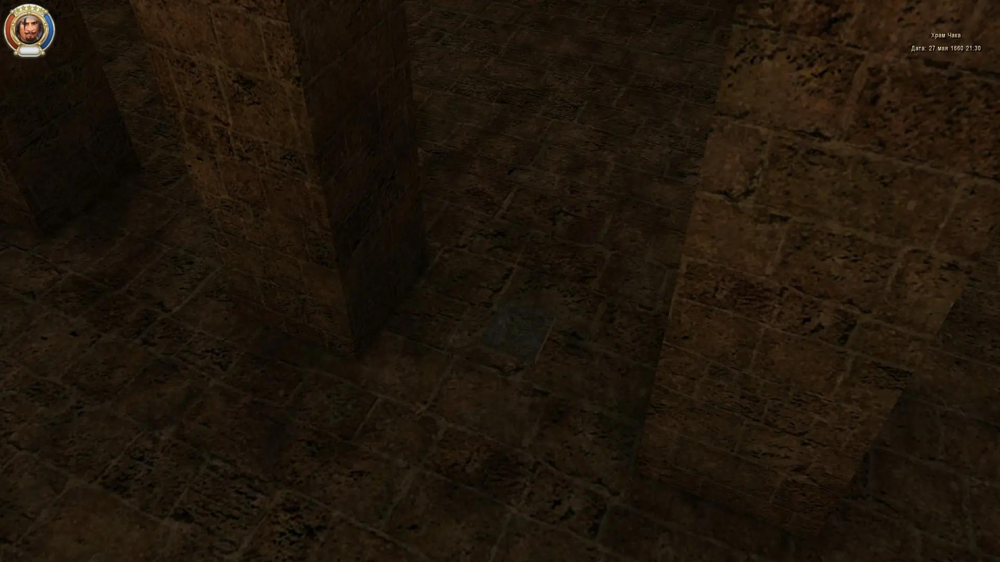
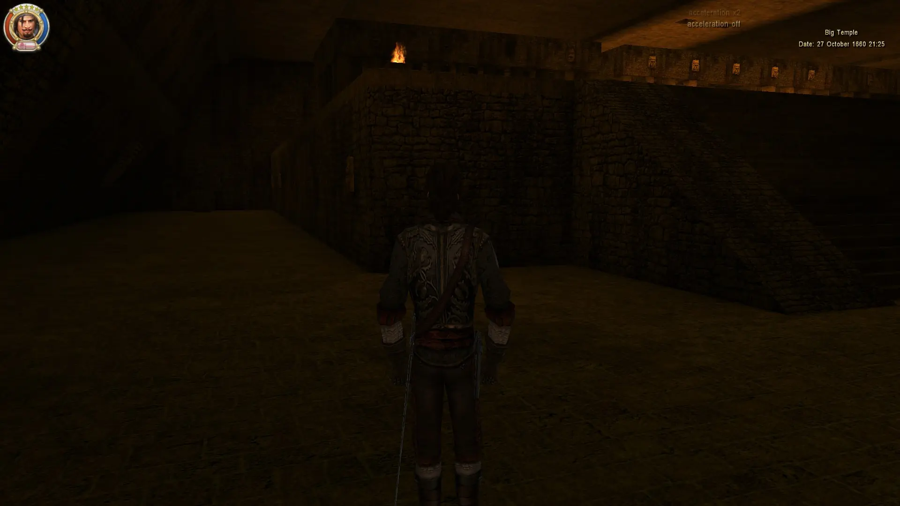
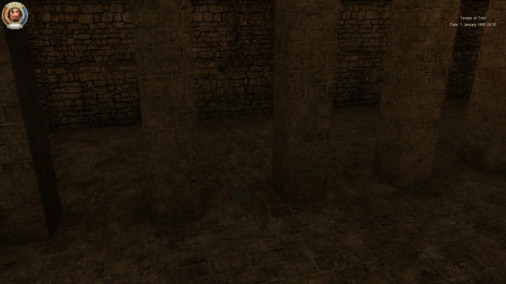
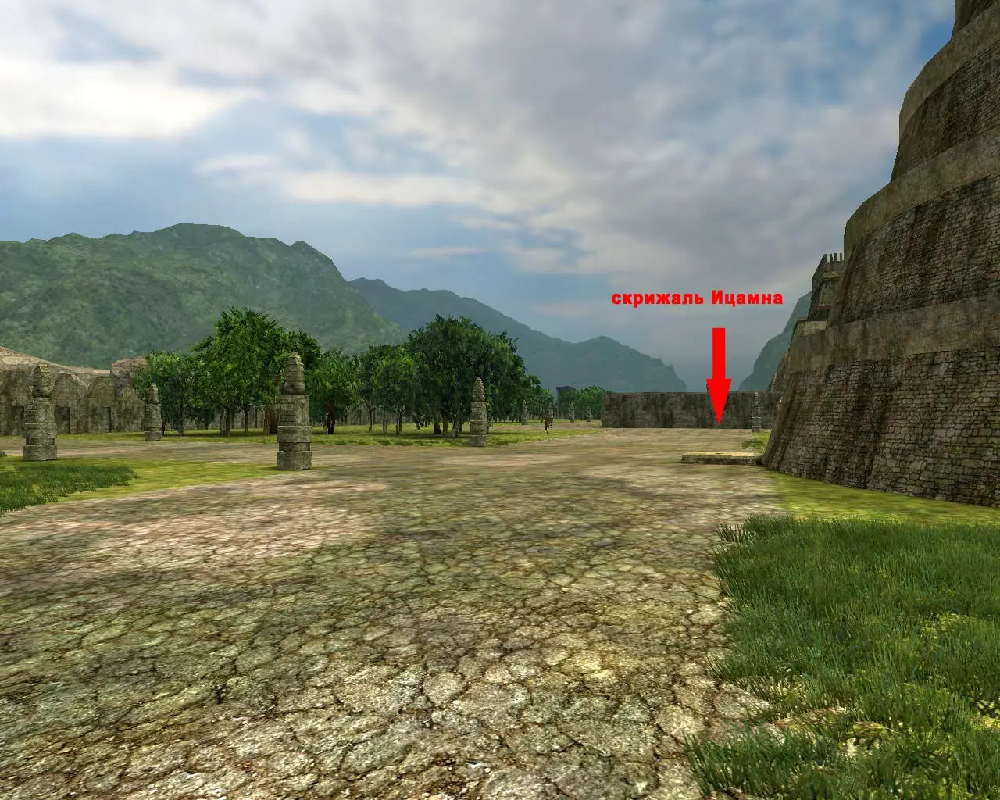
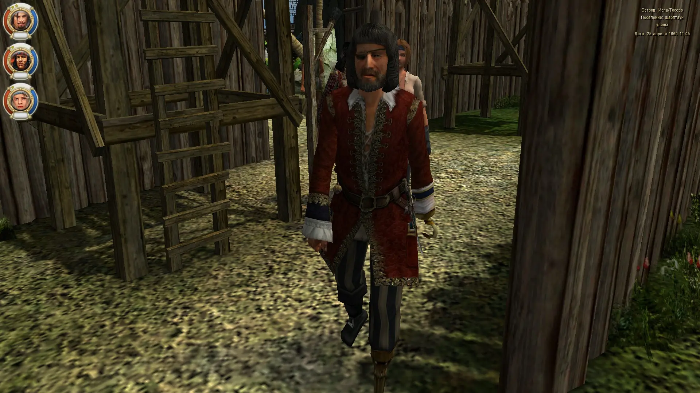
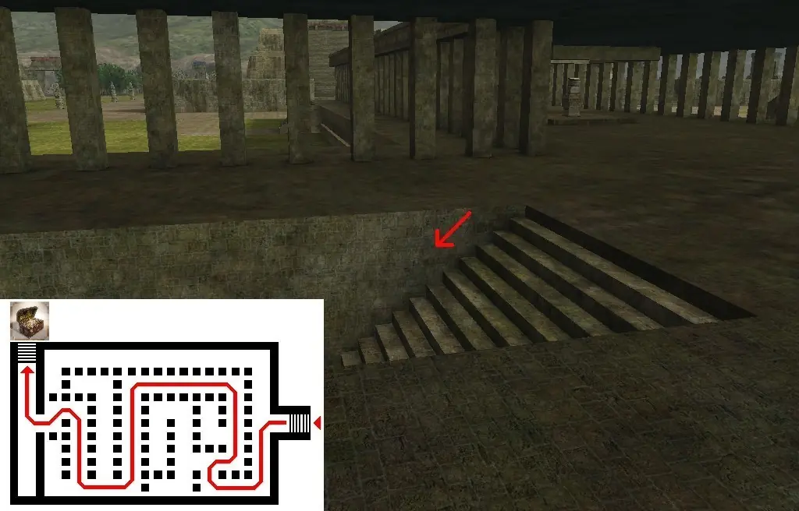

Юкатан
Белиз
← города и островаГорода
В скриптах: Beliz
Точки входа
8
Локации
порт: Белиз (`Beliz_town`)форт `fort_Beliz`мыс Каточе (`Shore6`)залив Косумель (`Shore7`)бухта Четумаль (`Shore8`)бухта Аматике (`Shore9`)лагуна Каратаска (`Shore10`)залив Гибели (`Shore_ship2`)
Гроты и подземелья
| Название | Вход | Содержимое | Опасности |
|---|---|---|---|
| Beliz_Cave | Beliz_Jungle_01 ⇄ CaveEntrance_1 → пещера → CaveEntrance_3 ⇄ Beliz_jungle_03 (СКВОЗНАЯ, два входа) | box1, box2, box3 — «рядом с каменным мостиком», «на большом камне», «рядом с верёвкой»; вход по форуму — справа от выхода из Белиза | cavernMedium1, самая богатая пещера Мэйна |
| Beliz_Cave_2 | Beliz_Jungle_01 → CaveEntrance_2 → пещера; тупик | box1 — «под досками в тупике» (шахта напротив выхода из Белиза) | DungeonDuffer2 |
| Carataska_Cave | Carataska_jungle_01 ⇄ CaveEntrance ⇄ пещера; ВТОРОЙ вход — снизу, из `Judgement_dumpcave` | — | cavernMedium1; единственный выход «с того света» — из подземелий под руинами храма |
| Tayasal_Grot | Tayasal_jungle_10 → CaveEntrance → грот; тупик | — | grotto1; кладовой точки нет |
| Tenotchitlan_Cave | Tenotchitlan_Jungle_03 → CaveEntrance → пещера | box1..box3 (в описаниях форума — «три сундука») | cavernMedium1 |
| Judgement_dungeon_01…10 → dumpcave | Carataska_jungle_03 ⇄ **Ruins** → 10 уровней подряд → затопленная пещера → **Carataska_cave**; из уровней 07 и 08 боковые выходы в `Judgement_church` | — (кладовых точек нет) | САМОЕ ДЛИННОЕ подземелье игры, все 10 уровней на РАЗНЫХ моделях; последние два — тип `Judgement_hell_dungeon`; нижняя пещера — underwater |
Карты










- Точек входа с моря: 8 (`islands_init.c:2126`).
- В скриптах `Beliz`, в игре подписан «Юкатан». Самый разветвлённый участок Мэйна — 8 точек входа с моря.
- Через `Shore_ship2` (залив Гибели) — путь к городу майя Тайясаль; из джунглей Теночтитлана есть переход в `Beliz_jungle_02`.